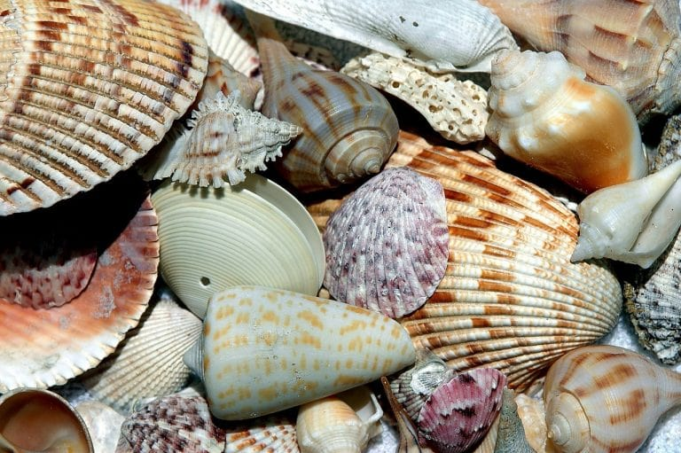
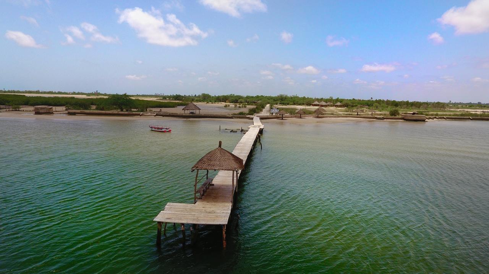
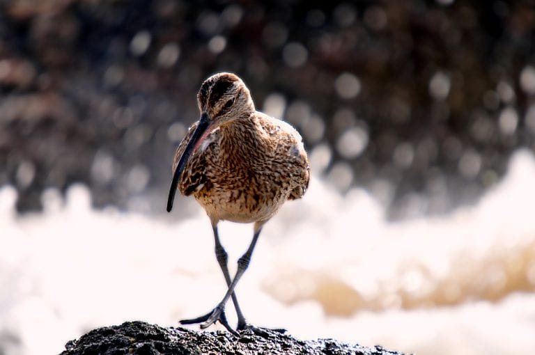

Sine Saloum, rien que le nom fait rêver, vous ne trouvez pas? Il s’agit de la région située au sud de la Petite Côte du Sénégal, juste au nord de la Gambie.
Elle est connue pour la beauté de ses paysages, que l’on peut admirer dans le Parc national du Sine-Saloum, inscrit au Patrimoine mondial de l’Unesco.
Le parc s’étend autour du delta du Sine Saloum, le point de confluence de deux fleuves (le Sine et le Saloum, logique n’est-ce pas?) avec la mer.
C’est une région très particulière de par les innombrables petites îles formées par les fleuves et l’écosystème qui y règne:
ce mélange d’eau douce et d’eau de mer ne convient qu’à peu d’espèces végétales et est donc le royaume de la mangrove, cette sorte de forêt poussant dans des marais maritimes et se caractérisant notamment par les palétuviers qui y poussent.

Visiter FADIOUTH, L’ÎLE AUX COQUILLAGES
L’île de Fadiouth se situe à l’extrémité du village côtier de Joal, le lieu de naissance de Léopold Sédar Senghor, et important port de pêche traditionnelle.
Au cœur de la lagune, le sol sableux peu profond et les nutriments charriés par les fleuves et leurs alluvions en fond une « pouponnière » idéale pour les patelles, les moules, les huîtres, des arches… Ramassés par les populations littorales depuis la nuit des temps, les coquillages vides ont été amassée, recouvrent l’île de Fadiouth.
Au crépuscule, le soleil qui s’écrase à l’horizon laisse dans le ciel un jaune-rouge flamboyant qui enlumine les façades blanches et bleues du village pour le plus grand plaisir.
Fadiouth est reliée à Joal par une passerelle de bois, longue d’environ 500 m. La majeure partie de l’activité des habitant se trouve à Joal, Fadiouth rassemble surtout des habitations. Comme Mar Lodj, les religions coexistent en paix, et il n’est pas rare d’assister à des cérémonies mixtes, entre chrétiens – en nombre majoritaire sur l’île – et musulmans..
Comme dans tous les petits villages, tous se connaissent et se rassemblent, notamment lors des enterrements au cimetière mixte.

L’ÎLE DE MAR LODJ
Au cœur du delta se trouve l’île de Mar Lodj.
On y embarque en partant de Ndangane, et l’on y circule en pirogue ou en charrette. Il y a peu de sites à visiter, à part la petite église ronde, sa Vierge noire et sa fresque :
on vient à Mar Lodj pour savourer le calme, l’authenticité, les beautés de la nature et pour déguster le poisson tout juste pêché et grillé au barbecue.

L’ÎLE AUX OISEAUX
Près de Mar Lodj se situe une petite île habitée exclusivement par une multitude d’espèces d’oiseaux.
Plus qu’une seule île, c’est surtout un ensemble de petits îlots faits de mangrove, avec, de-ci de-là, quelques baobabs qui dominent.
Pour le respect de leur tranquillité, mieux vaut éviter de mettre le pied à terre, l’île se visite en pirogue.